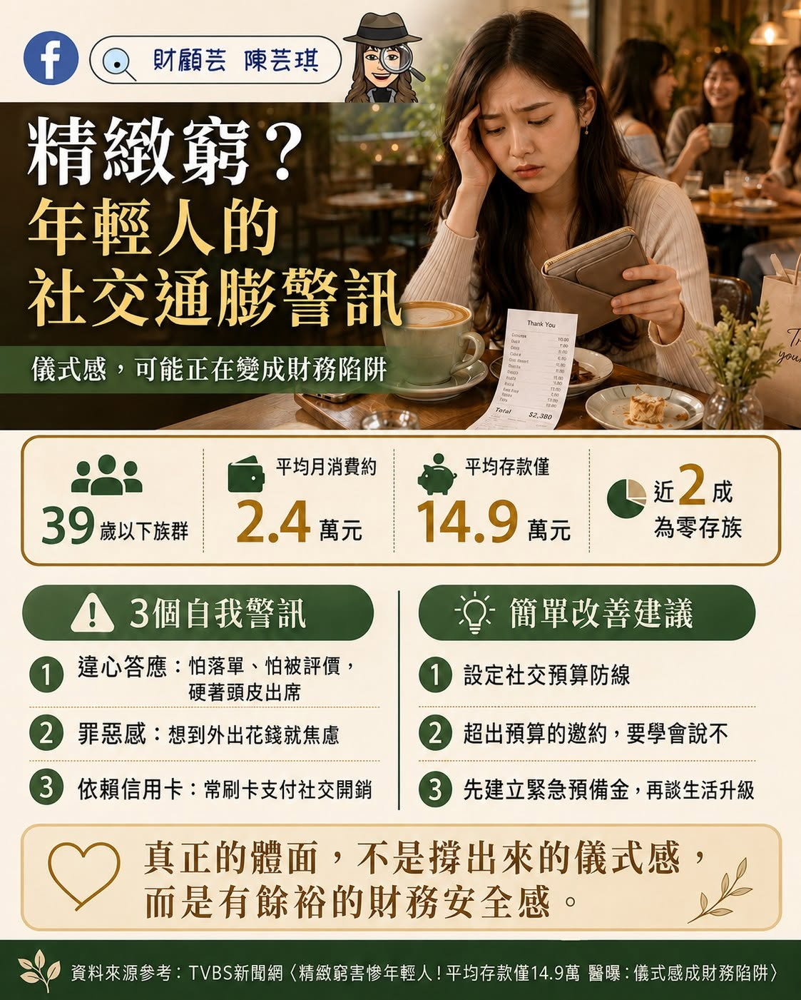

理財日常 · 社交與金錢
精緻窮，不是不努力
錢有時不是花在真正想要的生活，而是悄悄流向了看不見的社交壓力。

精緻窮社交通膨社交預算財務安全感緊急預備金
現在的年輕人，不是不想存錢，也不一定是不夠努力。生活裡常有許多「不得不」：擔心拒絕聚會會被朋友疏遠、害怕跟不上流行，或在工作很累的時候，想用消費好好犒賞自己。
一杯咖啡、一頓飯或一次聚會，本身未必是問題。真正讓人焦慮的，往往是還沒替收入安排位置，就在當下用信用卡撐住所有邀約與儀式感。
TVBS 新聞網引述調查指出，39 歲以下受訪者平均每月消費約 2.4 萬元、平均存款約 14.9 萬元，另有近兩成沒有存款。這些數字反映的是特定調查樣本，不代表每位年輕人的情況，但值得提醒我們留意財務緩衝是否足夠。
真正的體面，不是每一次都撐出來的儀式感，而是心裡知道：我有餘裕、有選擇，也不慌。
三個可能需要停下來看看的訊號
- 違心答應：明明不想去，卻因為怕落單或被評價而勉強出席。
- 花錢後充滿罪惡感：消費當下短暫開心，之後卻一直擔心帳單。
- 依賴信用卡救急：社交開銷開始擠壓生活費，只能用下期收入補上。
讓質感和安全感一起留下來
先設定社交預算
這個月能安心花多少，先決定好。超過預算的邀約，可以提出低成本的替代方式，也可以溫柔地說不。
先留住重要的錢
收入進來時，先替緊急預備金、必要帳單與重要目標保留位置，再安排能自在享受的生活費。
重新定義真正的體面
生活不是用來向別人證明。真正的從容，是知道自己負擔得起，也知道什麼時候可以不跟。
想聚餐，可以去；想犒賞自己，也可以買。理財不是要求生活變得辛苦，而是讓每一個「想要」不必犧牲未來的安心。
留給自己的小問題
最近一筆社交消費，是出於喜歡，還是害怕落單？
不用責怪自己。先看見花錢背後的心情，下一次就多一點選擇。
查看 Facebook 原文延伸閱讀
從不同角度，繼續整理
資料來源：TVBS 新聞網〈精緻窮害慘年輕人！平均存款僅14.9萬〉。文中統計為該新聞引述之調查結果，閱讀時應留意調查時間、樣本與定義。
把照顧、退休與想留給家人的事放在同一張圖上看。